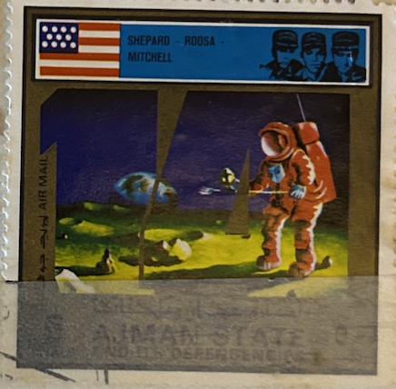
| SOURCE | TITLE| IMAGE MATCH | click to source page |
| eBay | VINTAGE, RAS AL KHAIMA, Cat# 316, "APOLLO 12 - Inspection of Surveyor III," 1969 | eBay | 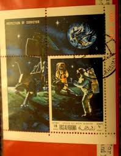 |
| gratisauktioner.dk | Gratisauktioner.dk | 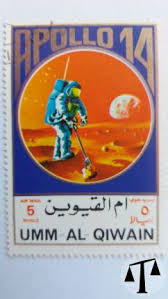 |
| eBay UK | Page of London Paint Box - Rare Moon Landing Astronauts in Space 1960s | eBay UK | 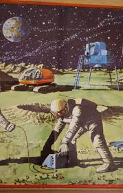 |
| Todocolección | umm-al-qiwain. apollo 14. 1973. 10x7 cm. sello. - Buy Stamps from other Asian countries on todocoleccion | 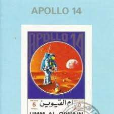 |
| eBay | 7. United Arab Emirates Umm al Qiwain Space Sheet 1972 Airmail - Apollo 15 | eBay | 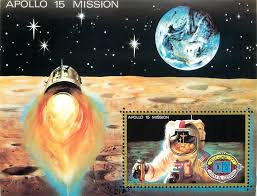 |
| eBay | Space "Menko" 1960's Japanese Vintage Cards lot 10 - John Glenn USA Gagarin CCCP | eBay | 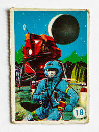 |
| Modern movies that feel like this? : r/MoviesThatFeelLike | 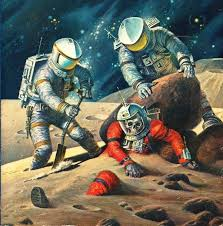 | |
| espreso.co.rs | Sve vesti dana na temu : Audio Active | Espreso | 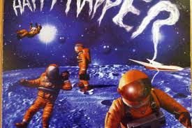 |
| Ill-Defined Space | The Underachievers: Legacy Launch Services | 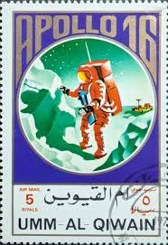 |
| paintings by Bob Eggleton : r/scifi | ||
| Genius | AUSAR – We all lose Lyrics | Genius Lyrics | |
| alternatehistory.com | Semper Fidelis ad Astra: An alternate History of the Space Race | Page 2 | alternatehistory.com | |
| Etsy | Space Flight New York News - SPECIAL LANDING ISSUE - July 21, 1969 - Etsy | 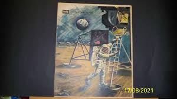 |
| Todocolección | paint box space age design - Buy Other vintage objects on todocoleccion | 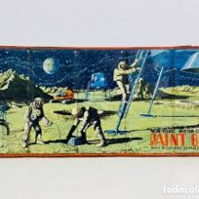 |
| PicClick UK | SUNFRESH DRINKS SPACE An Odhams Colour Book Rockets Space Station Sci Fi Nasa £8.12 - PicClick UK | 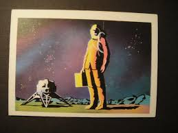 |
| Indian Stamp Co. | CENTRAL AFRICAN REP. 1982-Space Shuttle, Imperf, 1 Value, with Side Margin, S.G. 836-MNH - Indian Stamp Co. | Stampex India | 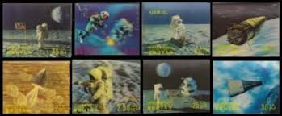 |
| ComicArtTracker | Little Nemo Auction Results - 16/05/2025 (CET) | ComicArtTracker | |
| 140 Retro futuristic ideas | retro futuristic, retro futurism, science fiction art | 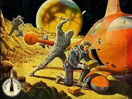 | |
| HipStamp | Fujeira Stamp: Space- First MAN on the Moon--Mnh S/S Sheet Please Watch | Middle East - Saudi Arabia, Stamp / HipStamp | 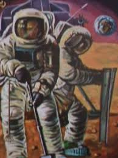 |
| 國立臺灣歷史博物館 | 太空人圖案墊板- 藏品資料- 國立臺灣歷史博物館典藏網 | 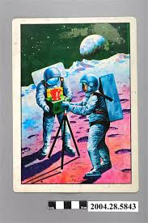 |
| Imgflip | Inherit the Stars Blank Template - Imgflip | 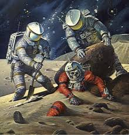 |
| eBay | 7. Yemen 1970 Airmail - Two Manned Moon Landing - Apollo 12 | eBay | 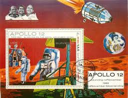 |
| Alamy | a stamp printed in Ras al-Khaimah shows man on the Moon, Apollo 12, circa 1970 Stock Photo - Alamy | 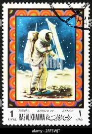 |
| eBay | Ajman Block 279 B MNH Imperf Space Apollo 13 Moon Buggy ZAYIX 031023SM39 | eBay | 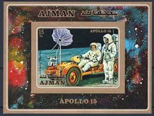 |
| Ruby Lane | New Worlds Ginn and Company Toronto Reader School Text Book. For Sale at Ruby Lane | 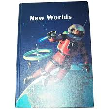 |
| askART | Howard Vachel Brown Auction Records & Pricing | askART | 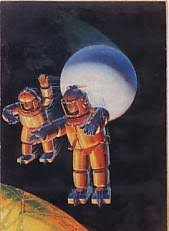 |
| Those who came before (built and photographed by me) : r/lego | 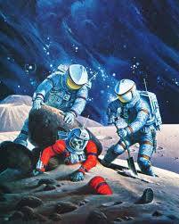 | |
| Fine Art America | Surveyor Posters for Sale - Fine Art America | 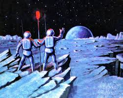 |
| The Irish Times | A Brilliant Void: A Selection of Classic Irish Science Fiction – The Irish Times | 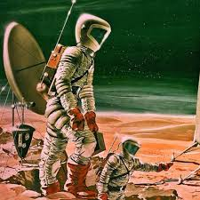 |
| eBay | Cook Islander Space Postal Stamps for sale | eBay | 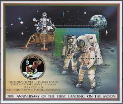 |
| 1950's Roger Wilkerson : Trip to the Moon | 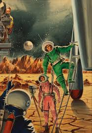 | |
| eBay | Um Al Quwein US Apollo 15 in Space Souvenir St 1972 MNH B-6 | eBay | 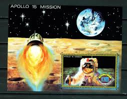 |
| eBay | STAMPMART : ANGOLA FUJEIRA UAE APOLLO SATELITE SPACE 3v MNH / USED S/SHEET | eBay | 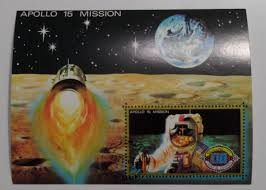 |
| eBay | Burundi Space Dirst Man on Moon Apollo 11 set 1969 BU | 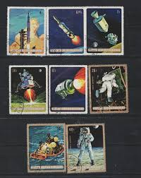 |
| eBay | AJMAN Apollo 15 stamp with postmark | eBay | 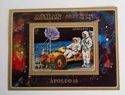 |
| HipStamp | Ajman- 1973- Apollo 11-17-With First DAY of Postal Cancel CTO Sheet Very Fine | Middle East - Saudi Arabia, Stamp / HipStamp | 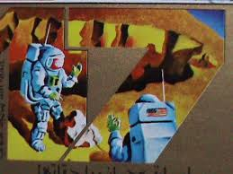 |
| Amazon.com | Amazon.com: Ajman 2669 A-2676 A Sheetlet (complete. problema.) 1973 apollo-program (sellos para coleccionistas) : Juguetes y Juegos | 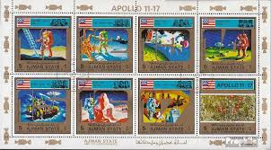 |
| Substack | Reflections in Space Helmets - by Adam Rowe | 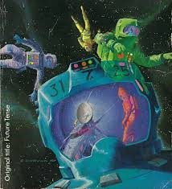 |
| Fine Art America | Lunar Land Surveyors Digital Art by Long Shot - Fine Art America | 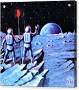 |
| Tribute to Herge: Explorers on the Moon Artwork | 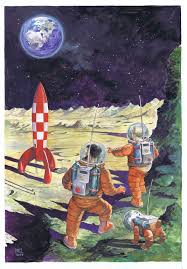 | |
| WorthPoint | 1966 Lenticular Matt Mason Astronaut Veri-Vue 3D Picture Space Age Moon Landing | #1811864234 | 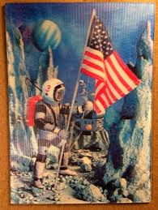 |
| eBay | 1957 Topps Space #35 Lunar Scouting Patrol EX/MT | eBay | 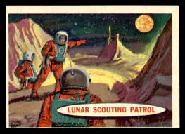 |
| Amusing Planet | The Talking Stamps of Bhutan | Amusing Planet | 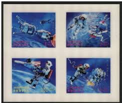 |
| eBay | 👉 RAS AL KHAIMA (UAE) = SPACE x2 sets + 14 S/S cto | eBay | 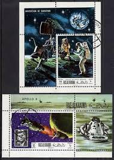 |
| X | Sci-fi art by Rick Sternbach, printed in Future Life, March 1980, originally for the cover of Analog, February 1976. | 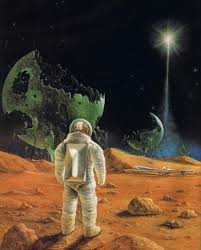 |
| eBay | 1957 Topps Space Cards - #51 "Eclipse of The Earth" - VG/Ex Condition | eBay | 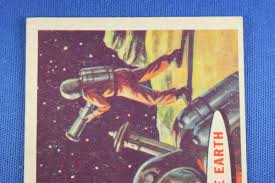 |
| Free | Mars pour la Jeunesse | 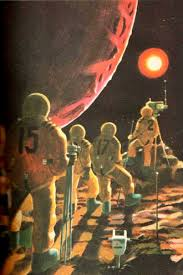 |
| eBay | Hungary 1961 Venus Space Probe ANY Sheet MNH | eBay | 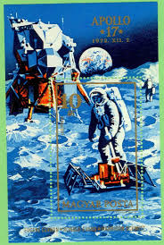 |
| Astronauts Exploring the Surface of an Asteroid by Lucien Rudaux (late 1920s) : r/ImaginaryAstronauts | ||
| Colorado State University | Apollo-mission Earth (and Earthrise) Imagery | 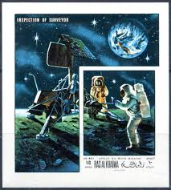 |
| eBay | NEW YORK SUNDAY NEWS COLOR MAGAZINE "MAN ON THE MOON" SPECIAL ISSUE DEC. 1969 | eBay | 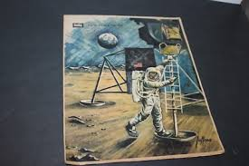 |
| Science Source | From The Big Bang To Space Exploration Greeting Card by Publiphoto | |
| BBC | Asteroid mining's peculiar past | 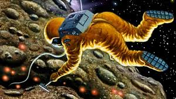 |
| WordPress.com | October « 2013 « deathvisionblog | 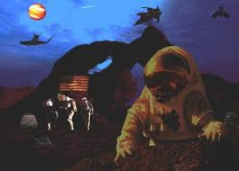 |
| Bandcamp | Music | Man Or Astro-Man? | 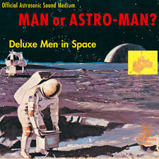 |
| Эпизоды космонавтики | Иво Штука, Теодор Ротрекл. Шесть дней на Луне-1 | |
| BeamNG.drive | What's your wallpaper? | Page 29 | BeamNG | |
| spine tingling artwork to enjoy | ||
| Sci Fi book cover art from Darrell K Sweet. | ||
| Etsy | Comic Book, Space, Sci-fi, Astronaut, Space Ships, Asteroids - Etsy |